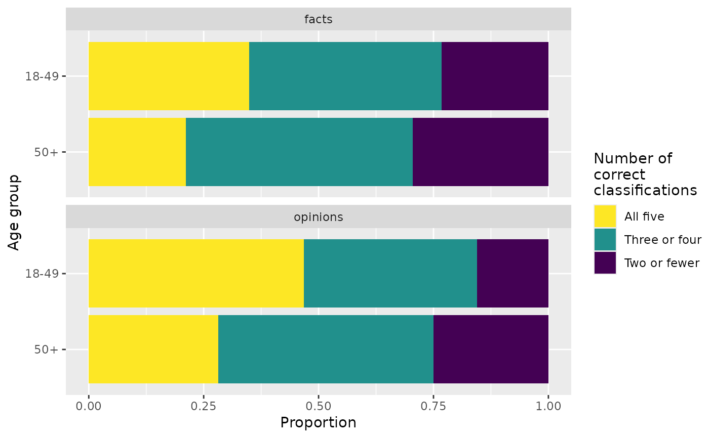
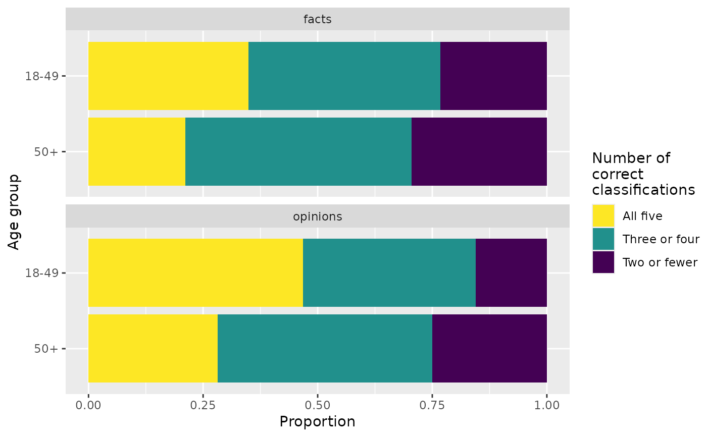

Pew Research Center conducted a survey in 2018, asking a sample of U.S. adults to categorize five factual and five opinion statements. This dataset provides data from this survey, with information on the age group of the participant as well as the number of factual and opinion statements they classified correctly (out of 5).
Format
A data frame with 5,035 rows and 3 variables.
- age_group
Age group of survey participant.
- fact_correct
Number of factual statements classified correctly (out of 5).
- opinion_correct
Number of opinion statements classified correctly (out of 5).
Source
Younger Americans are better than older Americans at telling factual news statements from opinions, Pew Research Center, October 23, 2018.
Examples
library(ggplot2)
library(dplyr)
library(tidyr)
library(forcats)
# Distribution of fact_correct by age group
ggplot(fact_opinion, aes(x = age_group, y = fact_correct)) +
geom_boxplot() +
labs(
x = "Age group",
y = "Number correct (factual)",
title = "Number of factual statements classified correctly by age group"
)
 # Distribution of opinion_correct by age group
ggplot(fact_opinion, aes(x = age_group, y = opinion_correct)) +
geom_boxplot() +
labs(
x = "Age group",
y = "Number correct (opinion)",
title = "Number of opinion statements classified correctly by age group"
)
# Distribution of opinion_correct by age group
ggplot(fact_opinion, aes(x = age_group, y = opinion_correct)) +
geom_boxplot() +
labs(
x = "Age group",
y = "Number correct (opinion)",
title = "Number of opinion statements classified correctly by age group"
)
 # Replicating the figure from Pew report (see source for link)
fact_opinion |>
mutate(
facts = case_when(
fact_correct <= 2 ~ "Two or fewer",
fact_correct %in% c(3, 4) ~ "Three or four",
fact_correct == 5 ~ "All five"
),
facts = fct_relevel(facts, "Two or fewer", "Three or four", "All five"),
opinions = case_when(
opinion_correct <= 2 ~ "Two or fewer",
opinion_correct %in% c(3, 4) ~ "Three or four",
opinion_correct == 5 ~ "All five"
),
opinions = fct_relevel(opinions, "Two or fewer", "Three or four", "All five")
) |>
select(-fact_correct, -opinion_correct) |>
pivot_longer(cols = -age_group, names_to = "question_type", values_to = "n_correct") |>
ggplot(aes(y = fct_rev(age_group), fill = n_correct)) +
geom_bar(position = "fill") +
facet_wrap(~question_type, ncol = 1) +
scale_fill_viridis_d(guide = guide_legend(reverse = TRUE)) +
labs(
x = "Proportion",
y = "Age group",
fill = "Number of\ncorrect\nclassifications"
)

# Replicating the figure from Pew report (see source for link)
fact_opinion |>
mutate(
facts = case_when(
fact_correct <= 2 ~ "Two or fewer",
fact_correct %in% c(3, 4) ~ "Three or four",
fact_correct == 5 ~ "All five"
),
facts = fct_relevel(facts, "Two or fewer", "Three or four", "All five"),
opinions = case_when(
opinion_correct <= 2 ~ "Two or fewer",
opinion_correct %in% c(3, 4) ~ "Three or four",
opinion_correct == 5 ~ "All five"
),
opinions = fct_relevel(opinions, "Two or fewer", "Three or four", "All five")
) |>
select(-fact_correct, -opinion_correct) |>
pivot_longer(cols = -age_group, names_to = "question_type", values_to = "n_correct") |>
ggplot(aes(y = fct_rev(age_group), fill = n_correct)) +
geom_bar(position = "fill") +
facet_wrap(~question_type, ncol = 1) +
scale_fill_viridis_d(guide = guide_legend(reverse = TRUE)) +
labs(
x = "Proportion",
y = "Age group",
fill = "Number of\ncorrect\nclassifications"
)
